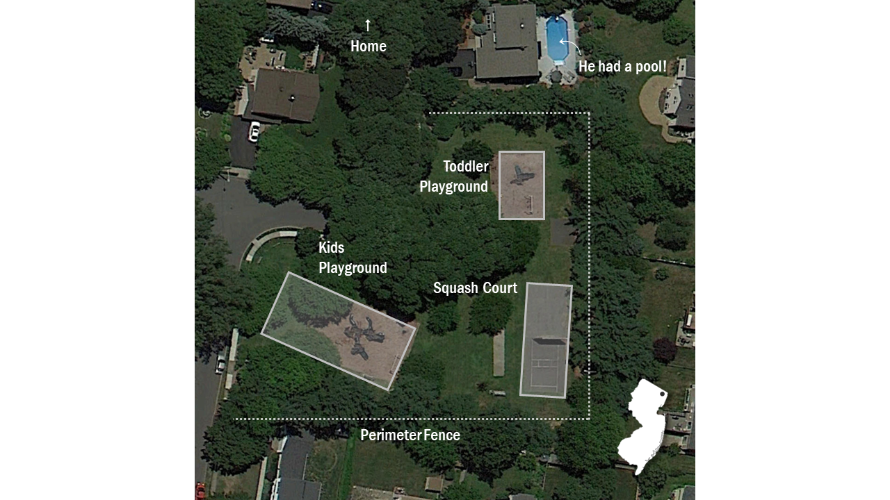

Sports
Field of Dreams—in Jersey?
What happens when you don’t live near a baseball field (or farm in Iowa) and most of your friends are at camp for the summer? Play stickball.
August 7, 2022
[Intro]
[Whimsical intro to set the scene for the summer of '92]
DiMaggio Park in Paramus, NJ
[Rules]
[Playfully describe quirky, made-up rules]